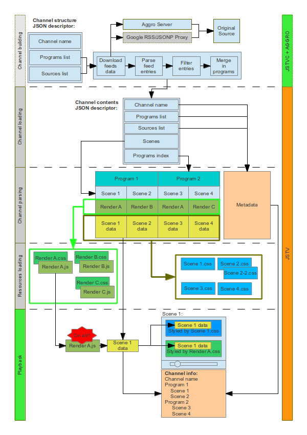

JSTV is not your classic video player. In fact, JSTV is an internet player: instead of a stream of images, JSTV plays a sequence of scenes rendered by Javascript code/CSS3 animations defined in a channel contents JSON descriptor.
Yeah, right: since the scenes are DHTML, your video is smaller in size, can have HTML5/vector quality graphics, can be interactive, can embed what you want, can use any JS framework, can show realtime data and can be built by your server without any particular transcoding phase.
Not enough? JSTV can be used together with its brother JSTVC: starting from a channel definition JSON which describes how your TV shows have to work, it merges multiple data feeds and generates a working channel contents file for JSTV - everything client side.
Your favourite feeds aren't served by yourself? No problem. Aggro is a simple PHP server that gently aggregates your JSTVC served feeds without any background process. It is bundled with the other two guys.
Confused? Gamecora TV is a neverending TV channel about videogames powered by the entire suite. Wondering how it works? Just download the sources and use your nerdy superpowers. All of this is Open Sourced.
Everything started after me, KesieV, and my girlfriend Bianca, both passionate gamers, read this pretty famous post on NeoGAF about the role of Nintendo Direct in gaming journalism.
That article, despite its focus is on gaming, depicts an idea I've always had about internet: it has the capabilities to give information from the original source but this practice is not as common as it should. Having first hand information is crucial for making your own opinion about facts instead of making your own opinion about opinions: you'll discover what's right, wrong, fair and unfair by yourself.
Keeping this idea in mind, we started the opensourced project JSTV that, thanks to some code and magic, can aggregate information from various sources and show them in video/reel form, that sometime looks like a train station display or a thematic TV channel, mainly picking the idea of Nintendo Direct and extending that to any topic and source.
While its scheme is quite a knot of arrows, the JSTV infrastructure is nothing exotic.

Download this scheme as PDF here.
Add these two lines in your page header:
Make a DIV object as placeholder for your player, give it the right size and an ID...
...and, when the page is loaded, embed your video like this:
The channel contents descriptor can be specified inline as a Javascript object or loaded externally as a file. The onload callback function is optional and is triggered when the player is ready for playing.
During the onload callback the player can be queried for different data:
If you're going to specify a channel structure descriptor, and then you're going to use the JSTVC/Aggro combo for making merging data with programs client-side in order to make your channel, you have to load one more Javascript file...
...and specify a channel structure descriptor instead of a channel contents descriptor but in the same way: defined inline or as a filename.
If you're going to produce your scene sequences by yourself, you just need a channel contents descriptor and JSTV player. The channel contents descriptor contains metadata of your channel, such like its name and description and the scene sequence to be played. Since it can be directly passed to the JSTV.embed command or loaded from a file, it can be statically defined in your Javascript, procedurally generated client-side by a Javascript function, statically saved on a file or dynamically generated by your server. (no particular flavour of server is required).
Your channel contents descriptors have to be structured in this way:
If you want to generate your scenes sequence client side starting from a particular dataset, you can use JSTVC/Aggro together with JSTV. JSTVC channel structure descriptor is quite similar to the JSTV channel contents descriptor - the main difference is that you're going to define how your programs are going to be composed instead of directly defining its scenes.
Client side channel definition is as fun as experimental: while it doesn't ensure the same resulting scene sequence on all of the clients, it removes the need of server side batch-production of the scene sequence distributing the data parsing process to all the clients and making them updating just the needed sources on-demand, reducing remarkably your server-to-server data transfer, since a full update of cached data will just be a worst case that can be handled without a running daemon - That's the Aggro job, which will avoid this, checking the creation date of each file before running an update.
Channel structure descriptor are directly passed to JSTV as for channel contents descriptor but it has to be structured in this way:
Both JSTV channel contents and JSTVC channel structure descriptor have to specify a set of sources from which your channel is built (or will be built) in their sources key. This set has to be specified inline for channel contents files - in channel structure you can also specify an external file as reference.
While this section is display-only for JSTV, it is more meaningful for JSTVC: it contains the full feeds database and will be used first by the sourcesProcessor in order to eventually pick a subset of them and then will be fetched in order to extract the data items used for filling the programs defined by the channel structure.
sourcesProcessor can decide client side a subset of feeds by its own but if you prefer a safer server side approach you can point to a server side produced sub-list in the channel structure descriptor instead of a static full database.
Data items are extracted by JSTVC from the specified sources defined into its channel structure file. Each feed passes through a processing queue defined for each feed and crawled for information.
Data items can be referenced by program segments of the channel structure descriptor via tags - the data items tags are both picked from the sources descriptor and the specific resource. You have to use the {pick:"keyname"} object in order to link scene data to data items.
JSTV is the main player. It reads a channel contents descriptor, loads its resources and starts playback. Since its limited functionality, its configuration is quite straightforward and - mostly - doesn't need any customization - user can configure the player from the menu button from the popup status bar showed, hovering or tapping on the lower part of the player.
JSTVC can fetch multiple feeds, extract data and merge them in programs, starting from a channel structure descriptor. Since it is a quite complex channel structure to channel contents descriptor converter, you don't have to use it for your channel - but you have to define your scene sequences by yourself.
JSTVC configuration is splitted in two: the reporter configuration defines the collecting phase behaviour and the finalizer configuration defines the data item merging phase. Luckly, the finalizer configuration is quite simple. :)
The reporter phase configuration:
The finalizer phase configuration:
Aggro is an RSS proxy and standardizator inspired by the Google RSS/JSONP proxy. It acts as an URL Handler and features all of the protocols supported by JSTVC.
Aggro was built just for doing its work and is not meant for offering always up-to-date data - typical of RSS reader aggregators. It was designed for working in limited server configurability and low resources consumption - its story is long and sad: it was built after Google shocking decision to close Reader and Twitter decision to kill User Timeline RSS feeds, both happened during JSTV development. That's why is called Aggro - it aggregates due to rage.
Since is quite minimal, Aggro configuration is contained in his index.php file as a sequence of setters calls.
JSTV, JSTVC and Aggro are MIT/GPL2 licensed and its code is opensource - as its demo channel Gamecora TV and its assets. Sources are available on GitHub.
Looking for original assets (full lenght musics, vectors, scripts etc.) for better contributing on Gamecora TV? Download Gamecora TV 0.1 original assets here.
Suggestions? Comments? Rage? I'm KesieV and you can contact me here (strip the numbers) or on Twitter.
JSTV, the core of Gamecora TV was coded by me, KesieV, with the valuable help of Sublime Text, but it's quite obvious that it's just a square with some knobs without its database, intro and outro creativity, logos and site review. Well, everything that's not coding was made by Bianca, my girlfriend, with the help of Inkscape, Gimp, LibreOffice and a huge amount of effort and time. And, whenever we could work as a duo, everything should have some creepy Daffy-Duck-Style beatbox as background music without...
Thanks to Giuseppe and Giovanni La Scala, Gabriele Sala, Stefano Fioretto and Alessio Gatti that shared their gaming passion with us making the Gamecora TV idea better... without knowing!
What you can do with JSTV? With some coding skills, it's up to you: it can display real-time notifies in a station or in a shop, provide e-learning platforms with interactive videos, broadcast self-made indie music groups videos, create your own digital photo frame and so on.
While scene sequences are preloaded, single scenes are in Javascript so they can get their data in realtime before being shown (have a look to the prepare phase on scene renderers), in order to display fresh data despite the playlist is the same. You can make semi-interactive quizzes, in which you can ask a question and wait a while for an answer: if the user click one of the choices, he will earn (or lose) points or - if your video is in kiosk mode - will just see the right answer blinking green. You can easily add a TOC on the first scene a-la Bluray and create your own channel straight from tagged WordPress posts - or a custom backend.
Really. JSTV is a Javascript scene player that can be scripted. Power comes just from your imagination - as ever.
"description": "Gaming info from their sources. Nobody in the middle.",
"logo": "GTV",
Notice that it can be hidden by the browser when embedding external objects, like Flash video players)
"height": 390,
"posterButton": "posterbutton.png",
"url": "http://gdata.youtube.com/feeds/base/users/gearboxsoftware/uploads?alt=rss&v=2",
"tag": [ "gearbox",;"studio","america","generic" ],
"description": "Official Youtube Channel of Gearbox",
"about": "http://www.gearboxsoftware.com/about",
"notes": "Borderlands series"
},
{
"url": "https://www.facebook.com/feeds/page.php?id=298652701947&format=rss20",
"tag": [ "gearbox", "thirdparty", "studio", "america", "generic" ],
"description": "Official Facebook Page of Gearbox"
"about": "http://www.gearboxsoftware.com/about",
"notes": "Borderlands series"
}, ...
If you need some in-depth explanation about the sources descriptor, have a look to the sources descriptor section for more details.
"resources": [
{
"type": "stylesheet",
"url": "programs/independentsday/stylesheet.programindependentsday.css"
},
{
"type": "stylesheet",
"url": "programs/independentsday/font/stylesheet.fontindependentsday.css"
}
],
"musicIntro": {
"name": "intro",
"files": {
"audio/mp3": "music.mp3",
"audio/ogg": "music.ogg"
}
},
"renderer": "simpleintro",
"type": "programintro program-independentsday",
"program": "Independents Day",
"description": "Random gaming news from independent studios",
"logo": "programs/independentsday/logo.png"
},
{
"renderer": "youtube",
"tag": [ "feed-video", "gearboxsoftware", "type-video", ;"gearbox", "thirdparty", "studio", "america", "generic" ],
"title": "Borderlands 2 - Sir Hammerlock's Big Game Hunt Launch Trailer",
"videoId": "2mSRW_Yscb8",
"link": [
"http://www.youtube.com/watch?v=2mSRW_Yscb8&feature=youtube_gdata"
]
}, ...
- some resources: (optional) it is an array that lists a series of external files needed for rendering this particular scene. type can be stylesheet or javascript and the related source address is described by the url attribute. It can be both an absolute or relative address. If a resource is referred multiple times is loaded just once. Since CSS file onload event is not available, a timer is used. It's possible to check when your stylesheet was loaded with best accuracy naming your files yourcssname.youruniquefilekey.css and adding a .onload-youruniquefilekey { z-index: 123321; } line on the bottom.
- a renderer: it describes the Javascript and CSS files needed for shaping this specific scene. It will load a pair of files located at [JSTV path]/renderers/[renderer name].js and [JSTV path]/renderers/[renderer name].css. The Javascript must be structured as JSTV scene renderers: documentation about JSTV renderers is within the sample renderers code.
The other keys will be passed to the specified renderer as arguments in order to render your scene so its syntax may vary. You can find each renderer documentation within their code. You can use the same renderer for multiple scenes: it will be loaded just once and called with different arguments.Channel schedule is generated by renderers too, starting from the scene data and most of them uses the tag, title or program keys.
"title": "Independents Day",
"description": "Random gaming news from independent studios",
"startAt": 0
},
{
"title": "Turtle Island",
"description": "Random news from American Studios",
"startAt": 15
}, ...
}